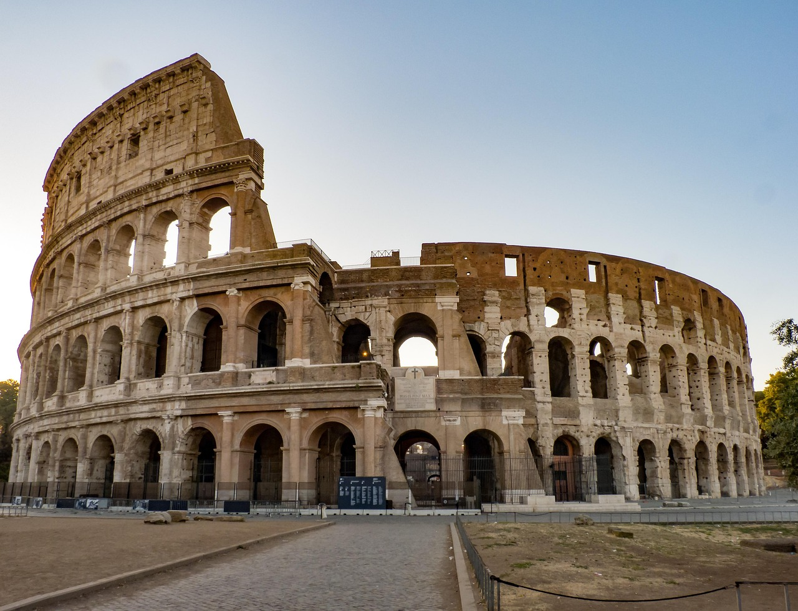
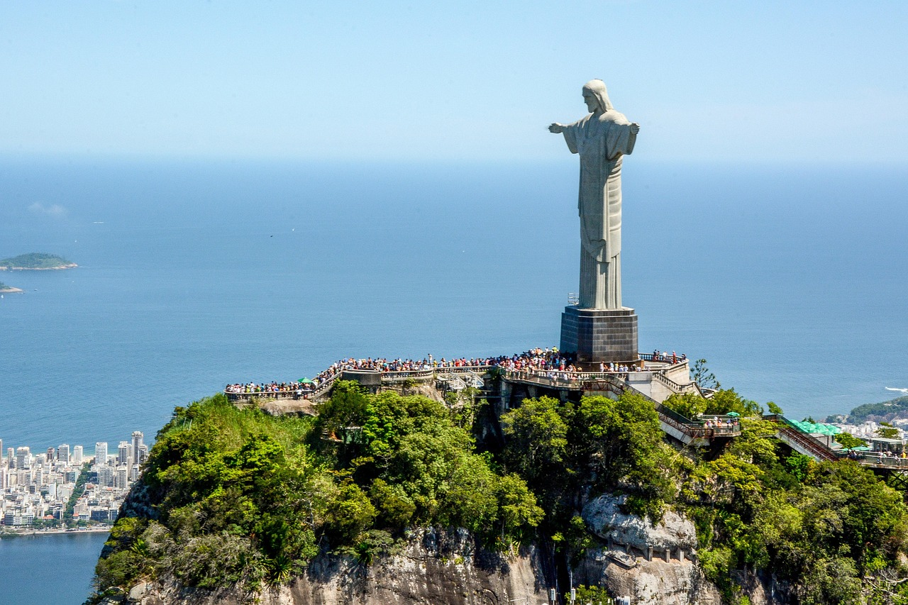

Odkryj 7 Cudów Świata
Przejrzyj galerię najwspanialszych budowli starożytnego świata i przetestuj swoją wiedzę!
Galeria 7 Cudów Świata

Wielki Mur Chiński
Olbrzymia forteca chroniąca Chiny przed najazdami.

Petra
Różowe miasto wykute w skale przez Nabatejczyków.

Koloseum
Rzymski amfiteatr symbolizujący potęgę Imperium.

Chichen Itza
Majowska świątynia Kukulkana w Meksyku.

Machu Picchu
Inkańskie miasto w chmurach Peru.

Taj Mahal
Białe marmurowe mauzoleum miłości w Indiach.

Chrystus Odkupiciel
Statua Jezusa w Rio de Janeiro.
Quiz: Ile wiesz o 7 Cudach Świata?
1. Który cud został wybudowany jako symbol miłości?
2. Gdzie znajduje się Machu Picchu?
3. Które cuda znajdują się w Azji? (zaznacz wszystkie)
4. Jak oceniasz swoją wiedzę o 7 Cudach Świata?
/10Informacje o 7 Cudach Świata
Dane techniczne
| Cud | Kraj | Rok budowy | Wysokość | koszt wycieczki |
|---|---|---|---|---|
| Wielki Mur Chiński | Chiny | 7 w. p.n.e. | 5-14 m | ok 400zł/os (jednodniowa wycieczka z pekinu) |
| Petra | Jordania | 312 p.n.e. | 45-60 m | od 340zł/os (jednodniowa wycieczka z egiptu) |
| Koloseum | Włochy | 80 n.e. | 48 m | od 100zł/os (bilet wstępu) |
| Chichen Itza | Meksyk | 600-900 n.e. | 30 m | od 300zł/os (bilet wstępu) |
| Machu Picchu | Peru | 1450 n.e. | 2430 m n.p.m. | od 200zł/os (bilet wstępu) natomiast wyprawa szlakiem inków od 2500zł/os |
| Taj Mahal | Indie | 1653 n.e. | 73 m | od 150zł/os (bilet wstępu) |
| Chrystus Odkupiciel | Brazylia | 1931 n.e. | 38 m | od 400zł/os (bilet wstępu) |
5 powodów, dla których warto odwiedzić:
- Niezwykła historia i kultura
- Wspaniała architektura
- Piękne widoki
- Możliwość nauki
- Niepowtarzalne doświadczenie
Co zabrać ze sobą:
- Aparat fotograficzny
- Wygodne buty
- Wodę i przekąski
- Przewodnik
- Mapę lub GPS